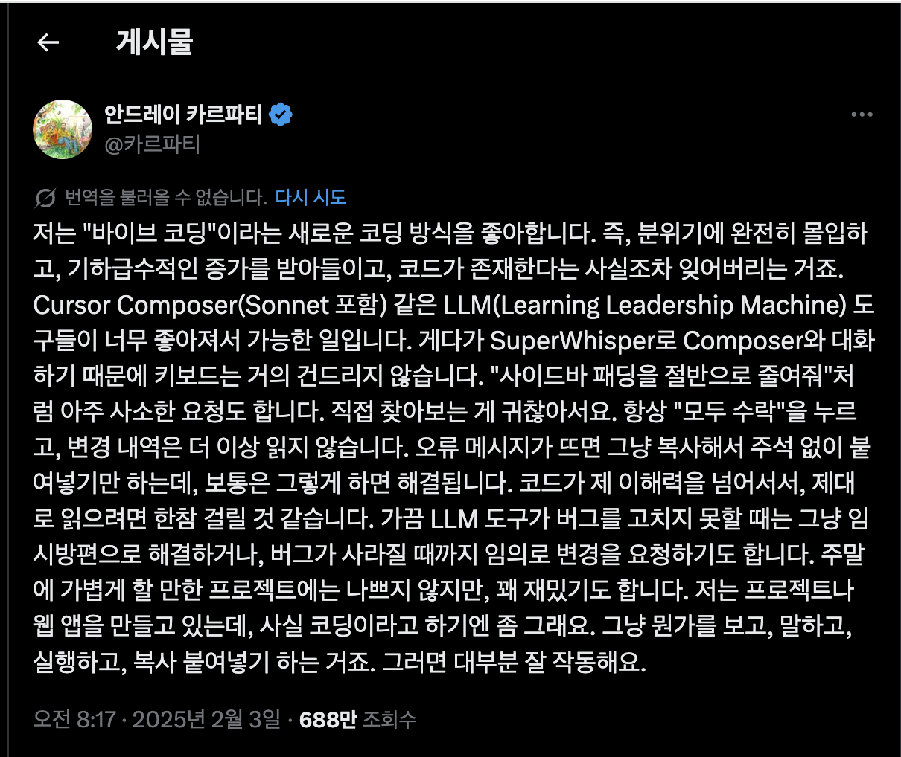

제가 받아들인 번역
“AI에게 코딩을 시킨다”는 건
직접 타이핑을 안 한다가 아니라,
일을 위임하고 통제한다에 가깝다.
keyword
2025.02
용어를 처음 강하게 의식한 시점
shift
Coder → Director
역할 이동
핵심은 프롬프트 문장력이 아니라, AI에게 일을 맡기는 방식 자체였습니다.

“AI에게 코딩을 시킨다”는 건
직접 타이핑을 안 한다가 아니라,
일을 위임하고 통제한다에 가깝다.